การใช้งานโมดูล WS2812 RGB LED (NeoPixel)#
▷ โมดูล WS2812 RGB LED#
WS2812 เป็นวงจรวม (IC) ที่ภายในมีวงจรควบคุมการให้แสงของ LED แบบ 3 สี (RGB LED + driver) มีโมเดลที่แตกต่างกันให้เลือกใช้ เช่น WS2812S, WS2812B และ WS2812C และใช้ตัวถังของไอซีที่มักพบเห็นได้โดยทั่วไป เป็นแบบ SMD 5050
จุดเด่นของไอซี RGB LED ประเภทนี้ คือ การใช้สายสัญญาณเพียงเส้นเดียวในการส่งข้อมูลเข้าไปข้างใน เพื่อกำหนดค่าสี (R,G,B) แต่ละสีใช้ข้อมูลจำนวน 8 บิต รวม 24 บิต (หรือ 3 ไบต์) ต่อหนึ่งตำแหน่ง หรือจะเรียกว่า "พิกเซล" (Pixel) ก็ได้ และส่งต่อข้อมูลออกไปยังไอซีในตำแหน่งถัดไปได้
ข้อสังเกต:
- WS2812 ใช้ตัวถังแบบ SMD มี 2x3 ขา ใช้แรงดันไฟเลี้ยง +4.5V ~ +5.5V
- WS2812B ใช้ตัวถังแบบ SMD มี 2x2 ขา ใช้แรงดันไฟเลี้ยง +3.5V ~ +5.3V
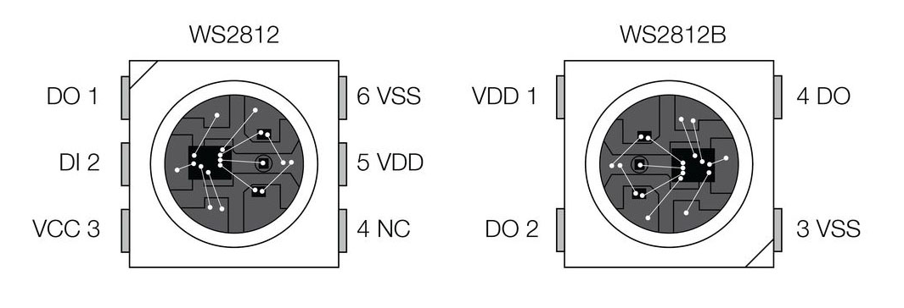
รูป: แสดงความแตกต่างของ WS2812 และ WS2812B
โดยปรกติแล้ว โมดูล WS2812 มีไอซี RGB LED ที่ถูกจัดเรียงต่อกันไว้มากกว่าหนึ่งดวง เช่น เรียงกันเป็นเส้นตรง (LED Bar) วงกลม (LED Ring) หรือ เมทริกซ์ (LED Matrix) เป็นต้น ผู้ใช้สามารถโปรแกรมค่าสีของ RGB LED แต่ละดวงได้แตกต่างกัน
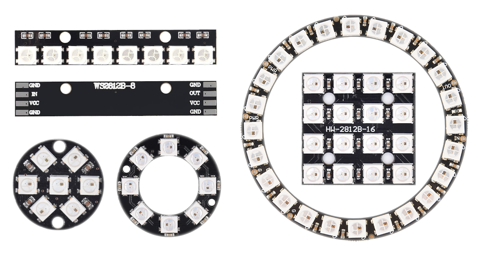
รูป: ตัวอย่างโมดูล WS2812 / WS2812B ที่มีจำนวนพิกเซลและการจัดวางที่แตกต่างกัน
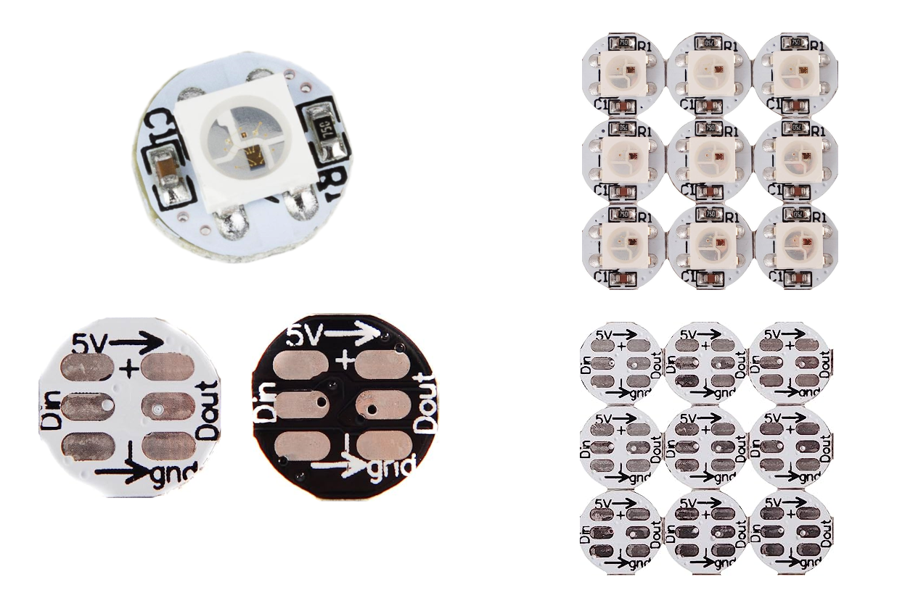
รูป: โมดูล WS2812B Breakout แบบหนึ่งพิกเซล (ผู้ใช้จะต้องบัดกรีสายไฟหรือขาของคอนเนกเตอร์ก่อนใช้งาน)
"NeoPixel" เป็นสินค้าหรือแบรนด์ของบริษัท Adafruit (USA) สำหรับโมดูล RGB LED และมีการเลือกใช้ไอซีที่แตกต่างกันไป เช่น WS2812/WS2812B, WS2811 และ SK6812
บริษัท Adafruit ก็ได้พัฒนาไลบรารีสำหรับ Arduino
ชื่อ Adafruit_NeoPixel
ให้เป็น Open Source และนำไปใช้กับไมโครคอนโทรลเลอร์ได้หลายรุ่นที่เขียนโปรแกรมได้ด้วย
Arduino API เช่น ชิป ATmega328P / ATmega32u4, ATSAMD21
RP2040 และ ESP32 เป็นต้น
▷ WS2812 Programming#
การกำหนดค่าสีของ RGB LED จะต้องใช้ข้อมูลจำนวน 3 ไบต์ (หรือ 24 บิต) ต่อหนึ่งดวง (หนึ่งพิกเซล) ค่า 0 คือ ระดับความสว่างต่ำสุดและ 255 คือ ระดับความสว่างสูงสุดของแต่ละสี
โมดูล WS2812 ใช้สัญญาณข้อมูลเพียงเส้นเดียว ในการส่งข้อมูลจากไมโครคอนโทรลเลอร์ไปยังขา DIN ของโมดูลดังกล่าว การส่งข้อมูลเป็นส่งข้อมูลแบบทีละบิตตามลำดับ (Bit Serial) ถ้าใช้ WS2812 จำนวนหลายตำแหน่ง ข้อมูลบิตจะถูกส่งเข้ามาที่ขา DIN และสามารถส่งต่อไปยังตำแหน่งถัดไปที่ขา DOUT ในลักษณะ Daisy Chain (Cascading)
จำนวนบิตสำหรับค่าสี RGB ของ LED หนึ่งดวงหรือหนึ่งตำแหน่ง จะเท่ากับ 24 บิต ดังนั้นถ้ามีจำนวน N ตำแหน่ง ก็จะต้องใช้ข้อมูล N · 24 บิต หรือ N · 3 ไบต์
ข้อมูลที่ถูกส่งออกไป ไบต์ที่ 0,1,2 จะใช้สำหรับพิกเซลของไอซีตำแหน่งแรก ไบต์ที่ 3,4,5 จะใช้สำหรับตำแหน่งที่สอง เป็นอย่างนี้ไปตามลำดับจนครบทุกตำแหน่ง
คำถาม: ถ้าใช้สายสัญญาณข้อมูลเพียงหนึ่งเส้น แล้วส่งข้อมูลจากไมโครคอนโทรลเลอร์ไปทีละบิต แล้วฝ่ายรับซึ่งเป็นโมดูล WS2812 จะทราบได้อย่างไรว่า ข้อมูลแต่ละบิตนั้นเป็น 0 หรือ 1 แล้วมีขอบเขตของสัญญาณบิตแต่ละบิตอย่างไร ?
บริษัท WorldSemi หนึ่งในบริษัทที่ผลิตไอซี WS2812B ได้กำหนดวิธีการส่งข้อมูลหรือโพรโทคอลเอาไว้แล้ว ซึ่งจะต้องเป็นไปตามนั้น มิเช่นนั้น การรับข้อมูลอาจไม่ถูกต้อง หรือไม่ได้รับข้อมูลใด ๆ
อ้างอิงตามเอกสาร WS2812 Datasheet และ WS2812B Datasheet การจำแนกข้อมูลบิตแต่ละบิต จะใช้ความกว้างของสัญญาณพัลส์ (Pulse) เป็นตัวกำหนด (หน่วยเป็นไมโครวินาที) ดังนี้
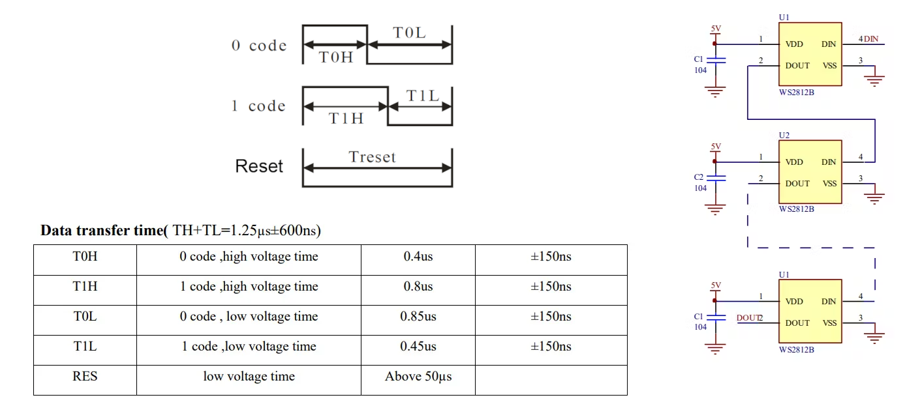
รูป: WS2812B Bit Timing Parameters
หากพิจารณาสัญญาณข้อมูลบิต จะเริ่มต้นด้วยช่วงที่เป็น High ตามด้วย Low บิตที่มีค่าเป็น 1 จะมีช่วง High กว้างกว่าช่วง Low ในขณะที่บิตที่มีค่าเป็น 0 จะมีช่วง High แคบกว่าช่วง Low
- T1H: ช่วงที่แรงดันไฟฟ้าเป็น High สำหรับบิตที่มีค่าเป็น 1
- T1L: ช่วงที่แรงดันไฟฟ้าเป็น Low สำหรับบิตที่มีค่าเป็น 1
- T0H: ช่วงที่แรงดันไฟฟ้าเป็น High สำหรับบิตที่มีค่าเป็น 0
- T0L: ช่วงที่แรงดันไฟฟ้าเป็น Low สำหรับบิตที่มีค่าเป็น 0
- Reset: ชช่วงที่แรงดันไฟฟ้าเป็น Low เพื่อจบการส่งข้อมูล
- TH+TL: ความกว้างของสัญญาณสำหรับหนึ่งบิต
WS2812 Bit Timing Parameters
- T0H: 0.40us = 400ns +/- 150ns
- T0L: 0.85us = 850ns +/- 150ns
- T1H: 0.80us = 800ns +/- 150ns
- T1L: 0.45us = 450ns +/- 150ns
- TH+TL: 1.25us +/- 600ns
- Reset: >= 50us
WS2812B Bit Timing Parameters
- T0H: 0.35us = 350ns +/- 150ns
- T0L: 0.90us = 900ns +/- 150ns
- T1H: 0.90us = 900ns +/- 150ns
- T1L: 0.35us = 350ns +/- 150ns
- TH+TL: 1.25us +/- 600ns
- Reset: >= 50us
ถ้ากำหนดให้ TH+TL = 1.25us ซึ่งเป็นความกว้างของสัญญาณสำหรับหนึ่งบิต ดังนั้นก็สามารถคำนวณค่าความถี่ได้ประมาณ 1e6/1.25 = 800kHz
ลำดับของบิตในแต่ละไบต์ จะเป็นแบบ MSB First และลำดับข้อมูลไบต์ที่จะถูกส่งออกไป เป็นแบบ GRB Format สำหรับ WS2812B คือ ไบต์แรกสำหรับสีเขียว (G: Green) ไบต์ที่สองสำหรับสีแดง (R: Red) และไบต์ที่สามสำหรับสีเขียว (B: Blue) เพื่อใช้กับพิกเซลในตำแหน่งแรก
การส่งข้อมูลทีละบิตออกไปด้วยการเขียนโปรแกรมไมโครคอนโทรเลอร์ สามารถทำได้หลายวิธี เช่น
- การใช้ขา GPIO เพื่อส่งข้อมูลบิตออกไปตามลำดับ แต่จะต้องควบคุมระยะเวลาของบิตให้ถูกต้อง
- การใช้ SPI ซึ่งเป็นวงจรภายในไมโครคอนโทรลเลอร์ และโปรแกรมให้ทำงานในโหมด SPI Master เพื่อเลื่อนบิตข้อมูลออกไปทางขา SPI MOSI โดยจะต้องกำหนดค่าบิตของ SPI Data Frame ให้เหมาะสมเพื่อสร้างพัลส์ช่วง High และ Low สำหรับแต่ละบิต
- การใช้วงจร RMT (Remote Control Transceiver ) ในกรณีที่ใช้ไมโครคอนโทรลเลอร์ Espressif ESP32
- การใช้วงจร PIO (Programmable I/O) ในกรณีที่ใช้ไมโครคอนโทรลเลอร์ Raspberry Pi RP2040
ข้อสังเกต: ถ้าศึกษา Source Code ของไลบรารี
Adafruit_NeoPixel ก็จะเห็นได้ว่า
มีการใช้เทคนิคหรือวิธีการที่แตกต่างกันไปขึ้นอยู่กับไมโครคอนโทรลเลอร์ที่ได้เลือกใช้งาน
เช่น ไฟล์ Adafruit_NeoPixel/esp.c สำหรับ ESP32
และ Adafruit_NeoPixel/rp2040_pio.h สำหรับ RP2040
▷ โค้ดสาธิตการใช้ไลบรารี Adafruit_NeoPixel สำหรับ ESP32#
ถัดไปเป็นตัวอย่างการเขียนโค้ด Arduino Sketch โดยใช้ไลบรารี Adafruit_NeoPixel
ซึ่งถือว่าเป็นวิธีการที่สะดวกและง่ายที่สุด และผู้ใช้จะต้องติดตั้งไลบรารีดังกล่าวสำหรับ Arduino IDE ก่อนใช้งาน
โค้ดตัวอย่างนี้จะใช้สำหรับ Arduino-ESP32 และสาธิตการเขียนโค้ดสำหรับ ESP32 เพื่อกำหนดสีของ WS2812 จำนวน 8 พิกเซล และเลือกใช้ขา GPIO18 ของ ESP32 เพื่อเชื่อมต่อกับขา DIN ของโมดูล WS2812
ค่าสีขนาด 24 บิต (GRB Format) จะถูกเลือกมาจากอาร์เรย์ชื่อ
COLOR_DATA_ARRAY[...] และส่งไปยังโมดูล WS2812 และเว้นระยะเวลา 0.5 วินาที
ก่อนเลือกค่าตัวเลขสำหรับ GRB ในลำดับถัดไปจากอาร์เรย์
// Note: Don't forget to install the Adafruit NeoPixel library.
// see: https://github.com/adafruit/Adafruit_NeoPixel
#include <Adafruit_NeoPixel.h>
const uint32_t COLOR_DATA_ARRAY[] = {
0x00FF00, // Starting with the Red color
0xFF0000,
0x0000FF,
0x00FFFF,
0xFFFF00,
0xFF00FF,
0x8F8F8F,
0x000000,
0x000000,
0x000000,
0x000000,
0x000000,
0x000000,
0x000000,
0x000000,
0x000000
};
#define NUM_PIXELS (8) // The number of pixels
#define WS2812_PIN (GPIO_NUM_18) // The ESP32 pin for DATA output
// Create an object from the 'Adafruit_NeoPixel' class
Adafruit_NeoPixel pixels(NUM_PIXELS, WS2812_PIN, NEO_RGB + NEO_KHZ800);
void setup() {
pixels.begin(); // Initialize the NeoPixel WS2812 strip.
pixels.setBrightness(255); // Set the brightness to 255.
}
void loop() {
static uint32_t NUM_COLORS = sizeof(COLOR_DATA_ARRAY)/sizeof(uint32_t);
static uint32_t start_index = NUM_COLORS/2 - 1;
// Set the color for each pixel.
for ( uint16_t i=0; i < NUM_PIXELS; i++ ) {
// Get the color value from the array.
uint32_t color = COLOR_DATA_ARRAY[ (start_index + i) % NUM_COLORS ];
// Set the color value of the i-th pixel.
pixels.setPixelColor( i, color );
}
// Update the pixels.
pixels.show();
// Increment the start index by 1.
start_index = (start_index+1) % NUM_COLORS;
delay(500);
}
ข้อสังเกต: โค้ดนี้ได้เจาะจงใช้ขา GPIO18 ของ ESP32 (WS2812_PIN)
แต่ก็สามารถนำไปใช้ได้กับบอร์ด Raspberry Pico (RP2040) และแก้ไขโค้ดเล็กน้อย
โดยกำหนดชื่อขา GPIO ที่ต้องการจะใช้สำหรับบอร์ด Pico
▷ การส่งข้อมูลบิตโดยใช้บัส SPI#
ตัวอย่างโค้ดถัดไปสาธิตการเขียนโปรแกรม Arduino-ESP32 โดยใช้วงจร VSPI ของ ESP32 ตั้งค่าให้ทำงานโหมด SPI Master เพื่อส่งข้อมูลบิตสำหรับค่าสีสำหรับ WS2812 จำนวน 8 พิกเซล ข้อมูลบิตนี้จะถูกส่งออกที่ขา GPIO23 ซึ่งตรงกับขา SPI MOSI ของวงจร VSPI
การส่งข้อมูลบิตสำหรับกำหนดค่าสีให้ WS2812 จะใช้รูปแบบการส่งข้อมูลด้วยบัส SPI ข้อมูลหนึ่งไบต์ของ SPI Data จะใช้สำหรับหนึ่งบิตข้อมูลของ WS2812
ในตัวอย่างนี้ได้กำหนดให้ SPI มีความถี่ประมาณ 6.4MHz หรือ หนึ่งไซเคิลของ SPI Clock (SCK) จะใช้เวลาเท่ากับ 156.25 ns และ 8 ไซเคิล จะใช้เวลา 1250 ns
ค่าของแต่ละบิตในการกำหนดค่าสี ซึ่งมี 2 กรณี คือ
- บิตมีค่าเป็น 1: ให้ส่งข้อมูลไบต์
0b11111000(ช่วง High มีความกว้าง "มากกว่า" ช่วง Low)- T1H: (5/8) x 1250 ns = 781.25 ns
- T1L: (3/8) x 1250 ns = 468.75 ns
- บิตมีค่าเป็น 0: ให้ส่งข้อมูลไบต์
0b11100000(ช่วง High มีความกว้าง "น้อยกว่า" ช่วง Low)- T0H: (3/8) x 1250 ns = 468.75 ns
- T0L: (5/8) x 1250 ns = 781.25 ns
หนึ่งพิกเซลมีจำนวนข้อมูลเท่ากับ 24 บิต ดังนั้นจะต้องสร้างข้อมูลสำหรับ SPI Data จำนวน 24 ไบต์ ถ้ามี 8 พิกเซล ก็จะต้องส่งข้อมูลจำนวน 8 x 24 = 192 ไบต์
#include "SPI.h"
const uint32_t COLOR_DATA_ARRAY[] = {
0x00FF00, // Starting with the Red color
0xFF0000,
0x0000FF,
0x00FFFF,
0xFFFF00,
0xFF00FF,
0x8F8F8F,
0x000000,
0x000000,
0x000000,
0x000000,
0x000000,
0x000000,
0x000000,
0x000000,
0x000000
};
#define SPI_SPEED (6400000) // SPI clock frequency (6.4MHz)
#define VSPI_MOSI (23) // connected to the WS2812 module's DIN pin
#define VSPI_MISO (19) // not used
#define VSPI_SCK (18) // not used
#define VSPI_CS (5) // not used
SPIClass spidev(VSPI); // VSPI is SPI3.
#define NUM_PIXELS (8) // Number of WS2812 pixels
#define BITS_PER_PIXEL (24) // Number of bits per pixel
#define BUFSIZE (NUM_PIXELS * BITS_PER_PIXEL)
uint8_t wdata[ BUFSIZE ]; // Write data buffer
void setPixelColor( uint32_t index, uint32_t color ) {
if (0 <= index && index < NUM_PIXELS) {
uint32_t bits = color;
uint32_t mask = 1 << (BITS_PER_PIXEL-1);
// Convert the 24-bit color value into an array of RMT items.
for (uint32_t b=0; b < BITS_PER_PIXEL; b++) {
wdata[(index * BITS_PER_PIXEL) + b]
= (bits & mask) ? 0b11111000 : 0b11100000;
mask >>= 1;
}
}
}
void showPixels() {
spidev.transferBytes( wdata, NULL, BUFSIZE );
}
void setup() {
spidev.begin(VSPI_SCK, VSPI_MISO, VSPI_MOSI, VSPI_CS);
// Don't use the hardware SPI chip select pin
spidev.setHwCs(false);
// Set the SPI bit order to MSB first
spidev.setBitOrder(MSBFIRST);
// Set the SPI data mode to mode 0
spidev.setDataMode(SPI_MODE0);
// Set the SPI clock frequency
spidev.setFrequency(SPI_SPEED);
}
void loop() {
static uint32_t NUM_COLORS = sizeof(COLOR_DATA_ARRAY)/sizeof(uint32_t);
static uint32_t start_index = NUM_COLORS/2 - 1;
// Set the color for each pixel.
for ( uint32_t i=0; i < NUM_PIXELS; i++ ) {
// Get the color value from the array.
uint32_t color = COLOR_DATA_ARRAY[ (start_index + i) % NUM_COLORS ];
// Set the color value of the i-th pixel.
setPixelColor( i, color );
}
// Update the pixels.
showPixels();
// Increment the start index by 1.
start_index = (start_index+1) % NUM_COLORS;
delay(500);
}
ถัดไปเป็นตัวอย่างการวัดสัญญาณเอาต์พุตโดยใช้อุปกรณ์จริง ทำการวัดและบันทึกด้วยอุปกรณ์ USB Logic Analyzer และแสดงผลด้วยซอฟต์แวร์ PulseView
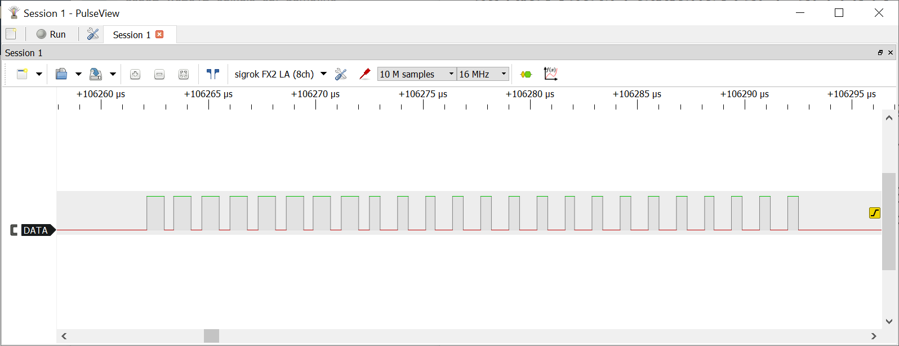
รูป: สัญญาณ DATA (DIN) จากขา SPI MOSI / GPIO23 ของ ESP32 (ทดลองส่งข้อมูลเพียง 24 บิต สำหรับหนึ่งพิกเซล)
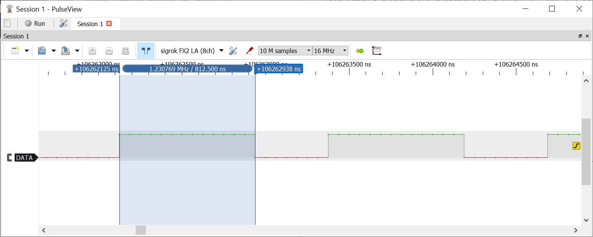
รูป: การวัดความกว้างช่วง High สำหรับบิตที่มีค่าเป็น 1 (วัดได้ประมาณ 813ns)
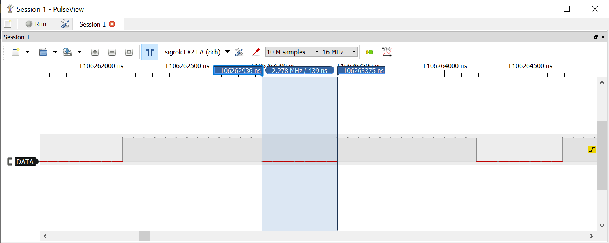
รูป: การวัดความกว้างช่วง Low สำหรับบิตที่มีค่าเป็น 1 (วัดได้ประมาณ 439ns)
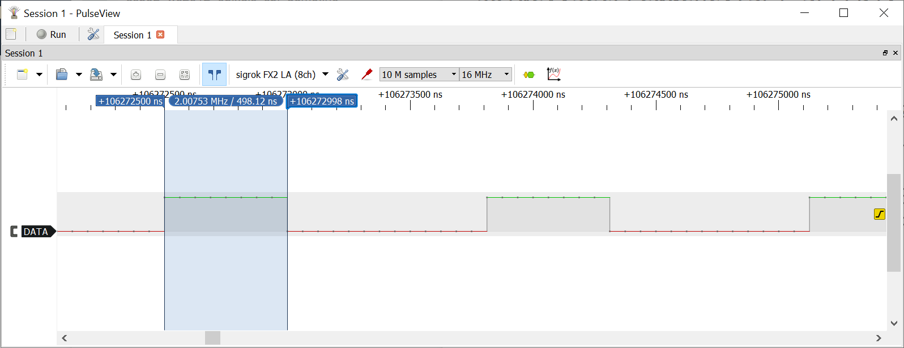
รูป: การวัดความกว้างช่วง High สำหรับบิตที่มีค่าเป็น 0 (วัดได้ประมาณ 498ns)
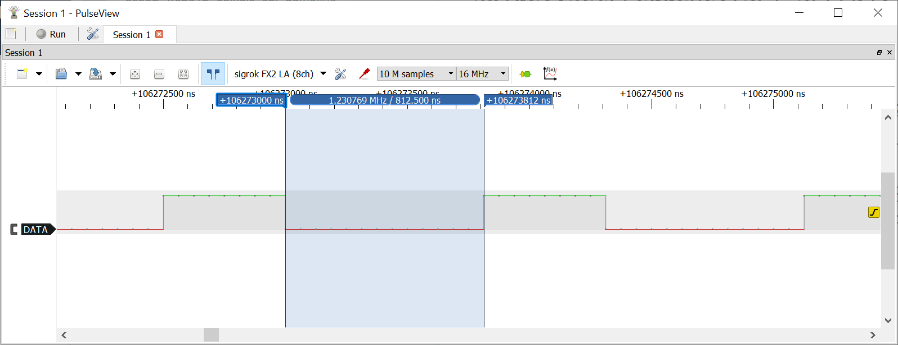
รูป: การวัดความกว้างช่วง Low สำหรับบิตที่มีค่าเป็น 0 (วัดได้ประมาณ 813ns)
▷ การเขียนโปรแกรม ESP32 โดยใช้วงจร RMT#
อีกตัวอย่างหนึ่งเป็นโค้ดสาธิตการใช้วงจร RMT ของ ESP32 เพื่อส่งข้อมูลบิตไปยังโมดูล WS2812 จำนวน 8 พิกเซล เลือกใช้ขา GPIO18 เป็นขาเอาต์พุต
RMT เป็นวงจรภายในของชิป ESP32 โดยทั่วไป จะใช้สำหรับสร้างสัญญาณพัลส์แบบ Pulse Train
เช่น การสร้างสัญญาณควบคุมสำหรับโมดูล WS2812 RGB LEDs เป็นต้น
วงจร RMT มีช่องสัญญาณเอาต์พุตให้เลือกใช้ 8 ช่อง ในตัวอย่างนี้ได้เลือกใช้ช่องส่งข้อมูลออกหมายเลข 0
(RMT_CHANNEL_0)
วงจร RMT ใช้สัญญาณ Clock ภายใน ที่มีความถี่ 80 MHz เป็นฐานเวลาในการทำงาน สามารถกำหนดค่าของตัวหารความถี่ (Clock Divider) ได้ในช่วง 1..255 (8 บิต) เช่น ถ้าใช้ตัวหารความถี่เท่ากับ 2 จะได้อัตราการนับที่ 80MHz/2 = 40MHz (RMT tick rate) หรือ 25ns ดังนั้น ถ้ามีจำนวนไซเคิลเท่ากับ 50 จะได้เท่ากับ 50 x 25ns = 1250ns
- ช่วงที่มีลอจิกเป็น High: ถ้ากำหนดช่วงเวลาให้เท่ากับ 34 ไซเคิล จะได้ความกว้าง 34 x 25ns = 850ns
- ช่วงที่มีลอจิกเป็น Low: ถ้ากำหนดช่วงเวลาให้เท่ากับ 16 ไซเคิล จะได้ความกว้าง 16 x 25ns = 400ns
วงจร RMT มีหน่วยความจำภายใน (64 x 32-bit Memory Block และมีทั้งหมด 8 บล็อก) สำหรับเก็บข้อมูลที่ใช้ระบุความกว้างของช่วง High และ Low
ตามลำดับสำหรับข้อมูลแต่ละบิต (เรียกว่า RMT Symbol) โดยจะต้องเขียนให้อยู่ในรูปของโครงสร้างข้อมูล
rmt_item32_t และใช้คำสั่ง rmt_write_items(...) เพื่อเขียนข้อมูลลงในหน่วยความจำสำหรับ RMT
โค้ดตัวอย่างต่อไปนี้ (คอมไพล์ด้วย Arduino-ESP32 v2.0.9, based on ESP-IDF v4.4.4) ใช้คำสั่งสำหรับการใช้งาน RMT ตาม Espressif API v4.4.4
#include <driver/rmt.h> // Use the Espressif's RMT driver for ESP32.
const uint32_t COLOR_DATA_ARRAY[] = {
// GRB color values
0x00FF00, // Starting with the Red color
0xFF0000,
0x0000FF,
0x00FFFF,
0xFFFF00,
0xFF00FF,
0x8F8F8F,
0x000000,
0x000000,
0x000000,
0x000000,
0x000000,
0x000000,
0x000000,
0x000000,
0x000000
};
#define NUM_PIXELS (8) // Set the number of pixels of the WS2812 strip.
#define RMT_TX_CHANNEL (RMT_CHANNEL_0) // Use the channel number 0 of the RMT module.
#define RMT_GPIO_PIN (GPIO_NUM_18) // Specify the GPIO18 for WS2812 data line.
#define BITS_PER_PIXEL (24) // Number of bits per pixel
#define WS2812_T1H (34) // High interval for bit 1
#define WS2812_T1L (16) // Low interval for bit 1
#define WS2812_T0H (16) // High interval for bit 0
#define WS2812_T0L (34) // Low interval for bit 0
#define NUM_RMT_ITEMS (NUM_PIXELS * BITS_PER_PIXEL)
rmt_item32_t rmt_items[ NUM_RMT_ITEMS ]; // data buffer for storing RMT items
void initializeRMT() {
rmt_config_t rmt_tx_cfg = {
.rmt_mode = RMT_MODE_TX,
.channel = RMT_TX_CHANNEL,
.gpio_num = RMT_GPIO_PIN,
.clk_div = 2,
.mem_block_num = 4, // use up to 4 memory blocks
.tx_config = {
.carrier_en = false,
.loop_en = false,
.idle_output_en = true,
}
};
ESP_ERROR_CHECK( rmt_config(&rmt_tx_cfg) );
ESP_ERROR_CHECK( rmt_driver_install(rmt_tx_cfg.channel, 0, 0) );
}
void setPixelColor( uint32_t index, uint32_t color ) {
if (0 <= index && index < NUM_PIXELS) {
uint32_t bits = color;
uint32_t mask = 1 << (BITS_PER_PIXEL-1);
// Convert the 24-bit color value into an array of RMT items.
for (uint32_t b=0; b < BITS_PER_PIXEL; b++) {
rmt_items[(index * BITS_PER_PIXEL) + b] = (bits & mask) ?
(rmt_item32_t){{{WS2812_T1H, 1, WS2812_T1L, 0}}} :
(rmt_item32_t){{{WS2812_T0H, 1, WS2812_T0L, 0}}};
mask >>= 1;
}
}
}
void showPixels() {
rmt_write_items( RMT_TX_CHANNEL, rmt_items, NUM_RMT_ITEMS, false );
rmt_wait_tx_done( RMT_TX_CHANNEL, portMAX_DELAY );
}
void setup() {
// Initialize the RMT of the ESP32 for implementing a WS2812 driver.
initializeRMT();
}
void loop() {
static uint32_t NUM_COLORS = sizeof(COLOR_DATA_ARRAY)/sizeof(uint32_t);
static uint32_t start_index = NUM_COLORS/2 - 1;
// Set the color for each pixel.
for ( uint32_t i=0; i < NUM_PIXELS; i++ ) {
uint32_t color = COLOR_DATA_ARRAY[ (start_index + i) % NUM_COLORS ];
setPixelColor( i, color );
}
// Update the pixels.
showPixels();
// Increment the start index by 1.
start_index = (start_index+1) % NUM_COLORS;
delay(500);
}
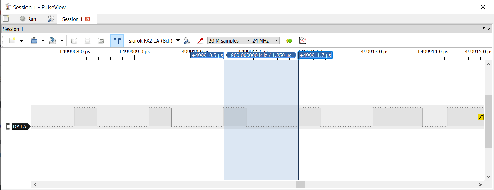
รูป: การวัดความกว้างของข้อมูลหนึ่งบิต (วัดได้ความกว้างประมาณ 1250ns )
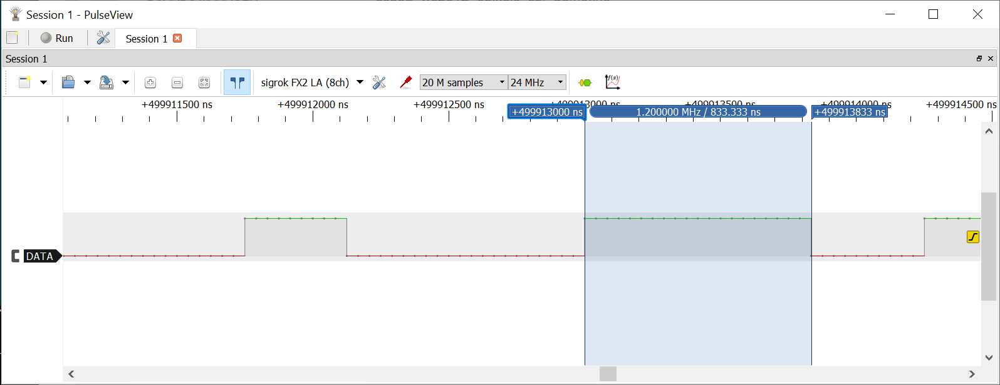
รูป: การวัดความกว้างช่วงที่เป็น High สำหรับบิตที่มีค่าเป็น 1 (วัดได้ความกว้างประมาณ 833ns )
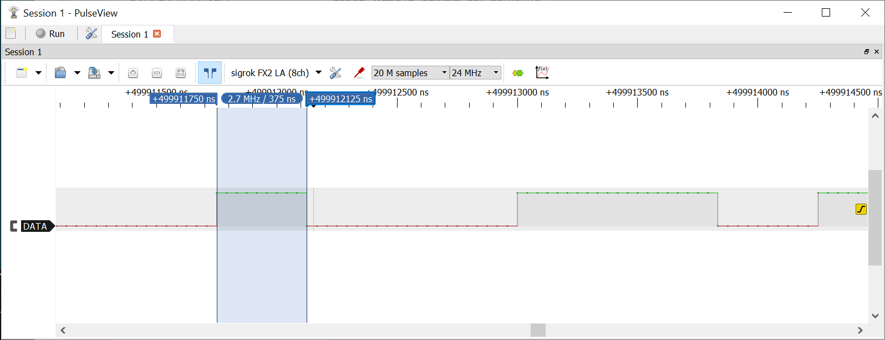
รูป: การวัดความกว้างช่วงที่เป็น High สำหรับบิตที่มีค่าเป็น 0 (วัดได้ความกว้างประมาณ 375ns )
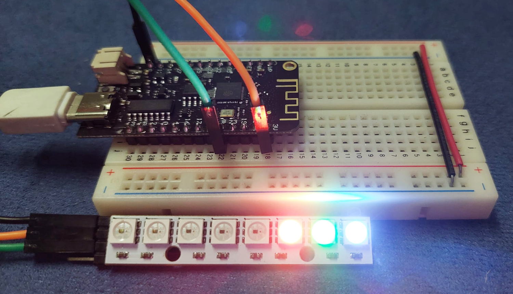
รูป: ตัวอย่างบอร์ด ESP32 และโมดูล 8-Pixel WS2812 LED Bar ที่ได้นำมาทดลองใช้งาน (ใช้แรงดันไฟเลี้ยง +3.3V จากบอร์ด ESP32 สำหรับโมดูล WS2812)
▷ การเขียนโปรแกรม Arduino RP2040 โดยใช้วงจร PIO#
RP2040 เป็นชิปไมโครคอนโทรลเลอร์ที่ถูกพัฒนาขึ้นโดยบริษัท Raspberry Pi Trading (UK) รวมถึงบอร์ด Raspberry Pi Pico ภายในชิป มีวงจรที่เรียกว่า PIO (Programmable I/O) และสามารถโปรแกรมได้โดยใช้คำสั่งในภาษาที่เรียกว่า Pico Assembly (.pio)
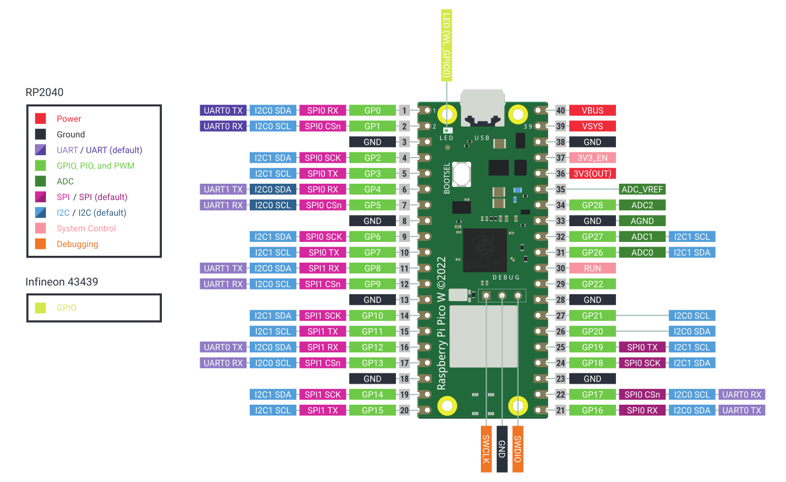
รูป: แผนผังแสดงตำแหน่งของขาบนบอร์ด Raspberry Pi Pico-W (Source: Raspberry Pi)
โค้ดที่เขียนโดยใช้ภาษา Pico Assembly จะต้องมีการแปลงโค้ดให้อยู่ในรูปแบบของไฟล์ .h โดยใช้โปรแกรมที่มีชื่อว่า pioasm
ซึ่งเป็นส่วนหนึ่งของ Pico C/C++ SDK & Tools เพื่อนำไปใช้ในการเขียนด้วยภาษา C หรือ Arduino Sketch
สำหรับผู้ใช้ทั่วไป เพื่อความสะดวกในการใช้งาน สามารถใช้โปรแกรม pioasm แบบออนไลน์ได้บนเว็บของ Wokwi
(https://wokwi.com/tools/pioasm)
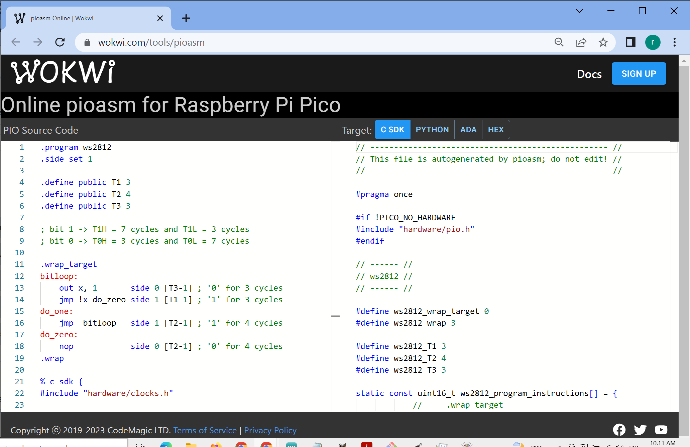
รูป: ตัวอย่างการใช้งาน Wokwi - Online picoasm for RP2040
ภายในชิป RP2040 มีวงจรที่เรียกว่า PIO อยู่ 2 ชุด (เรียกว่า PIO0 และ PIO1) แต่ละชุดประกอบไปด้วยหน่วยย่อยที่เรียกว่า State Machines (SMs) อย่างละ 4 ชุด (เรียกชื่อเป็น SM0..SM3 สำหรับ PIO0 และ SM4..SM7 สำหรับ PIO1) รวมทั้งหมดเป็น 8 ชุด
วงจร PIO สามารถนำมาใช้และโปรแกรมให้ทำหน้าที่เป็นตัวสร้างสัญญาณควบคุมการทำงานของ WS2812 ได้
ลองมาดูตัวอย่างโค้ดบางส่วนสำหรับ PIO ที่แสดงให้เห็นโครงสร้างและรูปแบบการใช้คำสั่ง (PIO instructions)
ตัวอย่างโค้ดนี้แสดงให้เห็นว่า มีการใช้คำสั่งเพียงไม่กี่คำสั่ง เช่น out, jmp และ nop เป็นต้น
.wrap_target
bitloop:
out x, 1 side 0 [T3-1] ; // (1) T3 = 3 cycles
jmp !x do_zero side 1 [T1-1] ; // (2) T1 = 3 cycles
do_one:
jmp bitloop side 1 [T2-1] ; // (3) T2 = 4 cycles
do_zero:
nop side 0 [T2-1] ; // (4) T2 = 4 cycles
.wrap
คำสั่ง out ใช้สำหรับเลื่อนบิตออกจาก Output Shift Register (OSR) ขนาด 32 บิต
ครั้งละหนึ่งบิต ในขณะที่ทำคำสั่งแต่ละครั้ง ก็สามารถกำหนดค่าลอจิกให้ขา GPIO ที่ได้เลือกใช้งานได้ด้วย
(เรียกว่า Side-Setting) และหน่วงเวลาก่อนทำคำสั่งถัดไปได้ (Delay) แต่ไม่เกิน 31 ไซเคิล
ข้อมูลขนาด 32 บิต (24 บิต จะใช้สำหรับกำหนดสีของ WS2812 หนึ่งพิกเซล) จะถูกอ่านมาจาก FIFO โปรแกรมคำสั่งที่ทำงานโดยซีพียูของ RP2040 จะคอยเขียนข้อมูลลงใน FIFO ด้านหนึ่ง และอีกด้านหนึ่ง SM ของ PIO จะอ่านค่าออกมาใช้
ลำดับการทำคำสั่งมีดังนี้
- (1) ข้อมูลจาก FIFO จะถูกนำไปใส่ลงในรีจิสเตอร์ OSR
เมื่อทำคำสั่ง
outก็จะเลื่อนบิตครั้งละหนึ่งตำแหน่ง แล้วนำไปค่าบิตไปใส่ลงในรีจิสเตอร์xซึ่งเป็น Scratch Register ขนาด 32 บิต - (2) เมื่อเลื่อนบิตแล้ว ในรีจิสเตอร์
xจะมีค่าเป็น0หรือ1และใช้ค่านี้ในการสร้างเงื่อนไขว่า จะทำคำสั่งใดถัดไป โดยใช้คำสั่งjmp(Jump) ถ้าค่าในxเป็น0ให้ไปทำคำสั่งเริ่มต้นที่do_zero:แต่ถ้ามีค่าเป็น1ให้ทำคำสั่งในตำแหน่งถัดไปคือdo_one: - (3) ในตำแหน่ง
do_one:มีคำสั่งjnpซึ่งจะทำให้การทำงานของ SM กระโดดย้อนกลับไปทำคำสั่งที่bitloop:แต่รอเวลาไว้ 5 ไซเคิล และกำหนดค่าลอจิกของขา GPIO ที่เกี่ยวข้องให้มีค่าเป็น1 - (4) ในตำแหน่ง
do_zero:มีคำสั่งnop(No Operation) ไม่ต้องทำอะไร แต่ให้รอเวลาไว้ 5 ไซเคิล และกำหนดค่าลอจิกของขา GPIO ที่เกี่ยวข้องให้มีค่าเป็น0เนื่องจากเป็นคำสั่งสุดท้ายและมีการระบุไว้ว่า เป็น.wrapดังนั้น SM จะวนกลับไปเริ่มทำคำสั่งแรกใหม่โดยอัตโนมัติ
โค้ดสำหรับ PIO ในตัวอย่างนี้ จะต้องเลือกค่าความถี่เท่ากับ 8MHz ซึ่งจะได้ PIO cycle เท่ากับ 125ns จากโค้ดตัวอย่าง การสร้างสัญญาณพัลส์สำหรับหนึ่งบิต จะใช้เวลาเท่ากับ T1 + T2 + T3 = 10 cycles หรือคิดเป็น 1250ns
- บิต 0: T0H=375ns และ T0L=875ns
- บิต 1: T0H=875ns และ T0L=375ns
ตัวอย่างโค้ดในไฟล์ ws2812.pio มีดังนี้
.program ws2812
.side_set 1
.define public T1 3
.define public T2 4
.define public T3 3
; bit 1 -> T1H = 7 cycles and T1L = 3 cycles
; bit 0 -> T0H = 3 cycles and T0L = 7 cycles
.wrap_target
bitloop:
out x, 1 side 0 [T3-1] ; '0' for 3 cycles
jmp !x do_zero side 1 [T1-1] ; '1' for 3 cycles
do_one:
jmp bitloop side 1 [T2-1] ; '1' for 4 cycles
do_zero:
nop side 0 [T2-1] ; '0' for 4 cycles
.wrap
% c-sdk {
#include "hardware/clocks.h"
static inline void ws2812_program_init(
PIO pio, uint sm, uint offset, uint pin, float freq, bool rgbw )
{
pio_gpio_init(pio, pin);
pio_sm_set_consecutive_pindirs(pio, sm, pin, 1, true);
pio_sm_config c = ws2812_program_get_default_config(offset);
sm_config_set_sideset_pins(&c, pin);
sm_config_set_out_shift(&c, false, true, rgbw ? 32 : 24);
sm_config_set_fifo_join(&c, PIO_FIFO_JOIN_TX);
int cycles_per_bit = ws2812_T1 + ws2812_T2 + ws2812_T3;
float div = clock_get_hz(clk_sys) / (freq * cycles_per_bit);
sm_config_set_clkdiv(&c, div);
pio_sm_init(pio, sm, offset, &c);
pio_sm_set_enabled(pio, sm, true);
}
%}
ตัวอย่างไฟล์ ws2812.pio.h ที่ได้จากการแปลงโค้ดในไฟล์ ws2812.pio โดยอัตโนมัติ
// -------------------------------------------------- //
// This file is autogenerated by pioasm; do not edit! //
// -------------------------------------------------- //
#pragma once
#if !PICO_NO_HARDWARE
#include "hardware/pio.h"
#endif
// ------ //
// ws2812 //
// ------ //
#define ws2812_wrap_target 0
#define ws2812_wrap 3
#define ws2812_T1 3
#define ws2812_T2 4
#define ws2812_T3 3
static const uint16_t ws2812_program_instructions[] = {
// .wrap_target
0x6221, // 0: out x, 1 side 0 [2]
0x1223, // 1: jmp !x, 3 side 1 [2]
0x1300, // 2: jmp 0 side 1 [3]
0xa342, // 3: nop side 0 [3]
// .wrap
};
#if !PICO_NO_HARDWARE
static const struct pio_program ws2812_program = {
.instructions = ws2812_program_instructions,
.length = 4,
.origin = -1,
};
static inline
pio_sm_config ws2812_program_get_default_config(uint offset) {
pio_sm_config c = pio_get_default_sm_config();
sm_config_set_wrap(&c, offset + ws2812_wrap_target,
offset + ws2812_wrap);
sm_config_set_sideset(&c, 1, false, false);
return c;
}
#include "hardware/clocks.h"
static inline
void ws2812_program_init(
PIO pio, uint sm, uint offset, uint pin, float freq, bool rgbw )
{
pio_gpio_init(pio, pin);
pio_sm_set_consecutive_pindirs(pio, sm, pin, 1, true);
pio_sm_config c = ws2812_program_get_default_config(offset);
sm_config_set_sideset_pins(&c, pin);
sm_config_set_out_shift(&c, false, true, rgbw ? 32 : 24);
sm_config_set_fifo_join(&c, PIO_FIFO_JOIN_TX);
int cycles_per_bit = ws2812_T1 + ws2812_T2 + ws2812_T3;
float div = clock_get_hz(clk_sys) / (freq * cycles_per_bit);
sm_config_set_clkdiv(&c, div);
pio_sm_init(pio, sm, offset, &c);
pio_sm_set_enabled(pio, sm, true);
}
#endif
ลองมาดูตัวอย่างการเขียนโค้ด Arduino Sketch สำหรับบอร์ด Raspberry Pico / Pico-W
โดยใช้ฟังก์ชันจากไฟล์ ws2812.pio.h
#include "hardware/pio.h"
#include "ws2812.pio.h" // Includes the 'ws2812.pio.h' file.
const uint32_t COLOR_DATA_ARRAY[] = {
// GRB color values
0x00FF00, // Starting with the Red color
0xFF0000,
0x0000FF,
0x00FFFF,
0xFFFF00,
0xFF00FF,
0x8F8F8F,
0x000000,
0x000000,
0x000000,
0x000000,
0x000000,
0x000000,
0x000000,
0x000000,
0x000000
};
#define GPIO_PIN (3) // Use the GP3 pin.
#define NUM_PIXELS (8) // Specify the number of WS2812 pixels.
#define PIXELS_BUF_SIZE (NUM_PIXELS)
uint32_t pixels_buffer[ PIXELS_BUF_SIZE ]; // Pixel buffer
const PIO pio = pio0; // Use either PIO0 or PIO1.
const uint32_t pio_sm = 0; // Use the first state machine (SM0).
void initWS2812Pio() {
// Load the PIO program ('ws2812_program' defined in 'ws2812.pio.h').
uint offset = pio_add_program( pio, &ws2812_program );
// Initialize the PIO, set the PIO clock (8MHz) and the GPIO pin.
ws2812_program_init(pio, pio_sm, offset, GPIO_PIN, 800000, false);
}
void setPixelColor( uint32_t index, uint32_t pixel_grb ) {
if ( index < PIXELS_BUF_SIZE ) {
pixels_buffer[ index] = pixel_grb;
}
}
void putPixel( uint32_t pixel_grb ) {
pio_sm_put_blocking( pio, pio_sm, pixel_grb << 8u );
}
void showPixels(void) {
for ( uint16_t i=0; i < PIXELS_BUF_SIZE; i++ ) {
uint32_t value = pixels_buffer[ i ];
pio_sm_put_blocking( pio, pio_sm, value << 8u );
}
}
void setup() {
Serial.begin(115200);
Serial.println("Pico RP2040 - PIO - WS2812 Demo!\n");
initWS2812Pio();
}
void loop() {
static uint32_t NUM_COLORS = sizeof(COLOR_DATA_ARRAY)/sizeof(uint32_t);
static uint32_t start_index = NUM_COLORS/2 - 1;
// Set the color for each pixel.
for ( uint32_t i=0; i < NUM_PIXELS; i++ ) {
uint32_t color = COLOR_DATA_ARRAY[ (start_index + i) % NUM_COLORS ];
setPixelColor( i, color );
}
// Update the pixels.
showPixels();
// Increment the start index by 1.
start_index = (start_index+1) % NUM_COLORS;
delay(500);
}
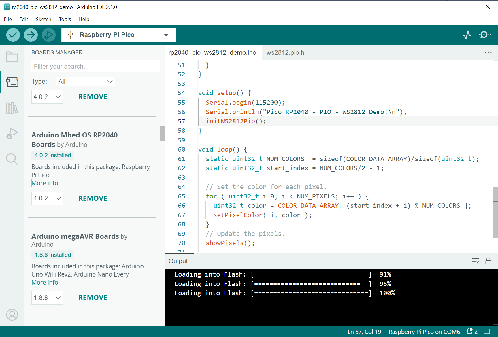
รูป: การติดตั้ง Arduino Core for RP2040 (ได้ติดตั้งและใช้งาน Arduino Mbed OS RP2040 Boards v4.0.2)
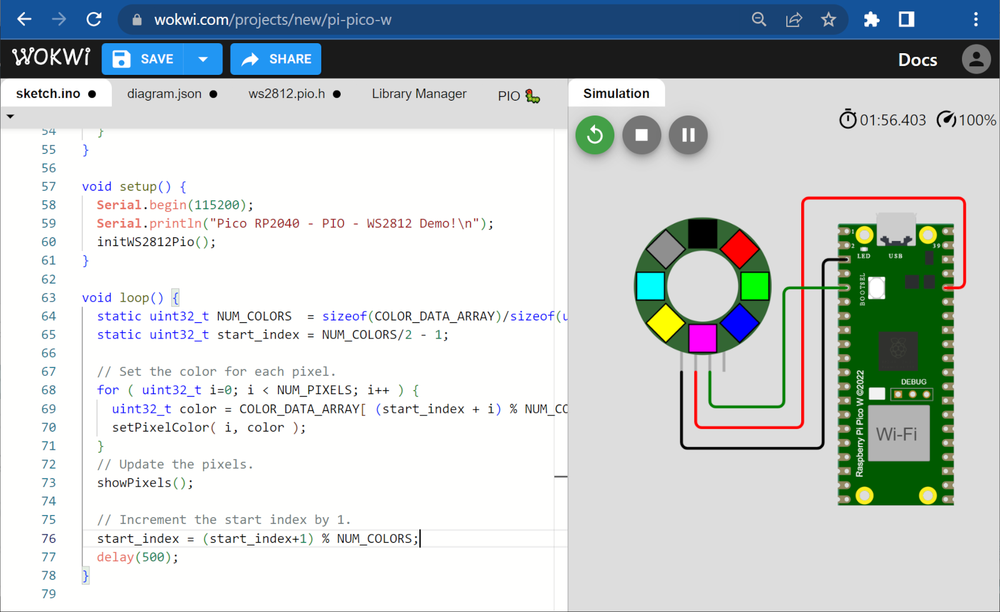
รูป: ตัวอย่างการจำลองการทำงานของฮาร์ดแวร์เสมือนจริงด้วย Wokwi Simulator
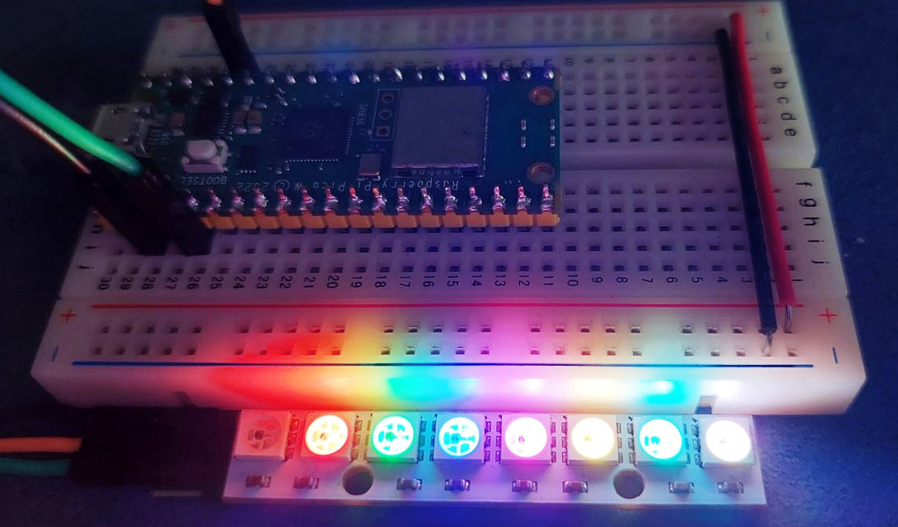
รูป: ตัวอย่างอุปกรณ์ที่ได้นำมาทดลอง
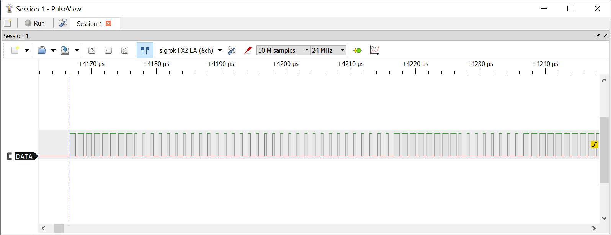
รูป: การวัดสัญญาณ DATA (DIN) จากขา GP3 ของ RP2040 และแสดงรูปคลื่นสัญญาณด้วย USB Logic Analyzer + PulseView
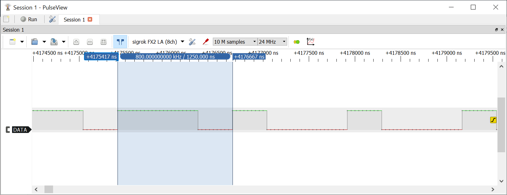
รูป: การวัดความกว้างของข้อมูลหนึ่งบิต (วัดได้ค่า 1250ns)
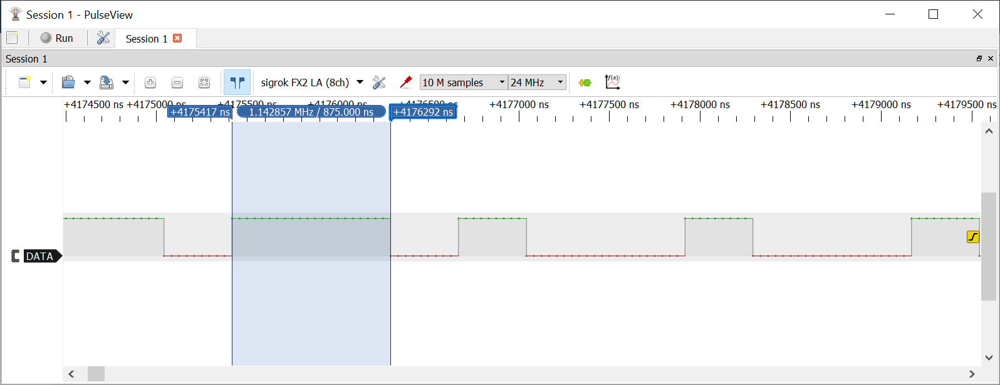
รูป: การวัดความกว้างช่วง High สำหรับบิตข้อมูลที่มีค่าเป็น 1 (วัดได้ค่า 875ns)
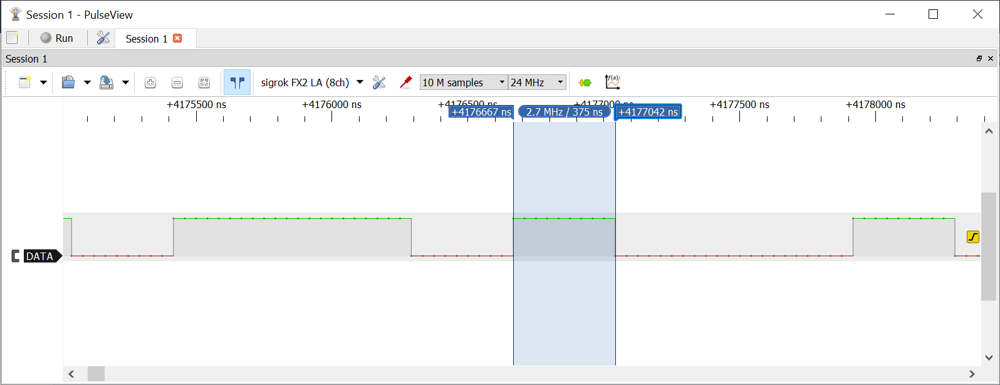
รูป: การวัดความกว้างช่วง High สำหรับบิตข้อมูลที่มีค่าเป็น 0 (วัดได้ค่า 375ns)
▷ กล่าวสรุป#
บทความนี้ได้นำเสนอการใช้งานโมดูล WS2812(B) และตัวอย่างการเขียนโค้ดสำหรับ Arduino-ESP32 และ Arduino-RP2040 โดยใช้วิธีการที่แตกต่างกัน และได้นำโค้ดไปทดลองใช้กับฮาร์ดแวร์จริง มีการวัดสัญญาณที่ขาเอาต์พุตด้วยอุปกรณ์ USB Logic Analyzer เพื่อวัดความกว้างของสัญญาณพัลส์ช่วงลอจิกที่เป็น High และ Low
This work is licensed under a Creative Commons Attribution-ShareAlike 4.0 International License.
Created: 2023-07-15 | Last Updated: 2023-07-16